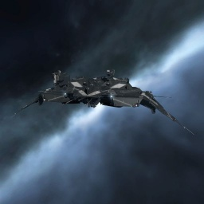

Blackbird

Тип корабля: Крейсер
Государство/Организация: Caldari
Примерная стоимость: 9.030.000 ISK
Описание
«Блэкбёрд» — небольшой высокотехнологичный крейсер, недавно принятый на вооружение флота Государства Калдари. Обычно используемые в составе флотов или в роли ведомых, они предназначены не столько для участия в лобовых боестолкновениях, сколько для решения более тонких тактических задач.
Характеристики
Корпус
Запас прочности корпуса: 1.400 ед.
Вместимость грузового отсека: 305 м^3
Объем отсека для дронов: 10 м^3
Пропускная способность канала телеуправления: 10 Мбит/с
Масса: 13.190.000 кг
Занимает объем: 96.000,0 м^3 (10.000,0 м^3 в разобранном виде)
Влияние инертности конструкции: 0,48x
Сопротивление корпуса ЭМ-урону: 33 %
Сопротивление корпуса термальному урону: 33 %
Сопротивление корпуса кинетическому урону: 33 %
Сопротивление корпуса фугасному урону: 33 %
Броня
Запас прочности брони: 1.200 ед.
Сопротивление брони ЭМ-урону: 50 %
Сопротивление брони термальному урону: 45 %
Сопротивление брони кинетическому урону: 25 %
Сопротивление брони фугасному урону: 10 %
Щит
Запас прочности щита: 1.400 ед.
Влияние на время регенерации щитов: 20 минут и 50 секунд
Сопротивление щита ЭМ-урону: 0 %
Сопротивление щита термальному урону: 20 %
Сопротивление щита кинетическому урону: 40 %
Сопротивление щита фугасному урону: 50 %
Сопротивление средствам РЭП
Сопротивление накопителя нейтрализирующему воздействию: 0 %
Сопротивление воздействию генератору стазис-поля: 0 %
Сопротивление воздействию помех на наводку вооружения: 0 %
Накопитель энергии
Емкость накопителя: 1.250,0 ГДж
Время востановления заряда: 7 минут и 25 секунд
Целеуказания
Максимальная дальность захвата цели: 85 км
Максимальное количество захваченных целей: 8
Радиус сигнатуры: 135 м
Разрешающая способность систем захвата цели: 230 мм
Эффективность радарной системы: -
Эффективность магнитнометрической системы: -
Эффективность гравиметрической системы: 20 ед.
Эффективность ладарной системы: -
Двигательная установка
Максимальная скорость: 190 м/с
Скорость в варп-режиме: 4,0 а.е./с.
Служба оснащения
Мощность ЦПУ: 425,0 Тф
Мощность реактора: 525 МВт
Калибровка: 400 ед.
Точки монтажа орудийных установок: 3
Точки монтажа пусковых установок: 3
Разъемы большой мощности: 4
Разъемы средней мощности: 6
Разъемы малой мощности: 3
Разъемы под установку тюнинг-модулей: 3